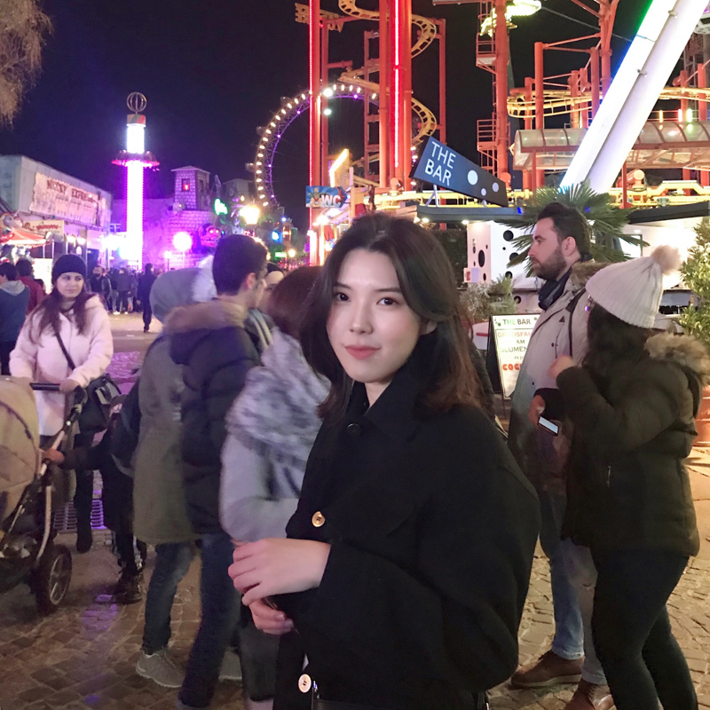

About Me
I was born on November 18th, 2000 in Busan, a coastal city on the southeastern tip of South Korea, and grew up there until I was 22. I'm really a homebody, so in my free time I like to bake or paint at home. Or I like to go to nature where there are no crowds, so I like to go camping with my friends and family.
I was a kid who loved music and art, and I went to an art high school and majored in composition. However, at some point, I started to feel a lot of pressure and decided that music was not my path. That's how I ended up in my current life in Canada.
I'm pretty happy with my new program, IMD. I'm still not sure if I'm more interested in graphic design or web development, but I'm looking forward to enjoying the courses and finding out what I like.
Hobbies
- Baking
- Camping
- Piano
“When you change your thoughts, remember to also change your world.”
-Norman Vincent Peale